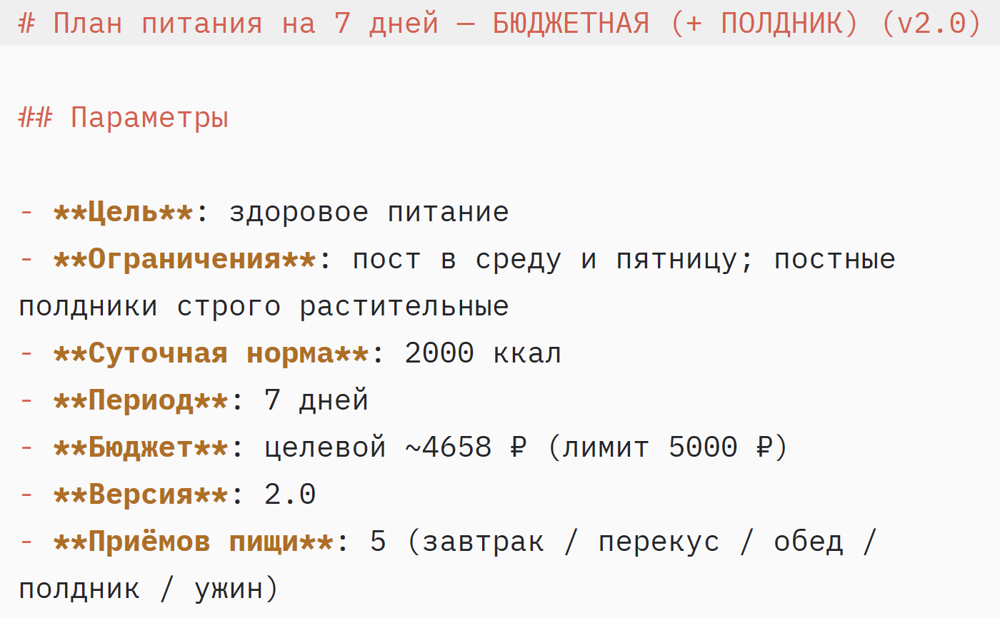
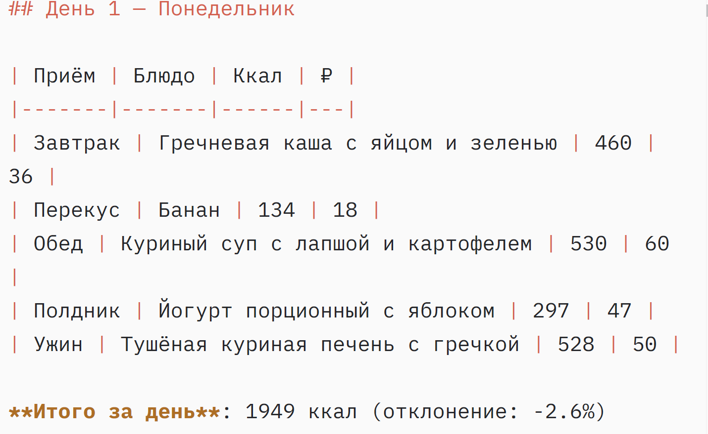
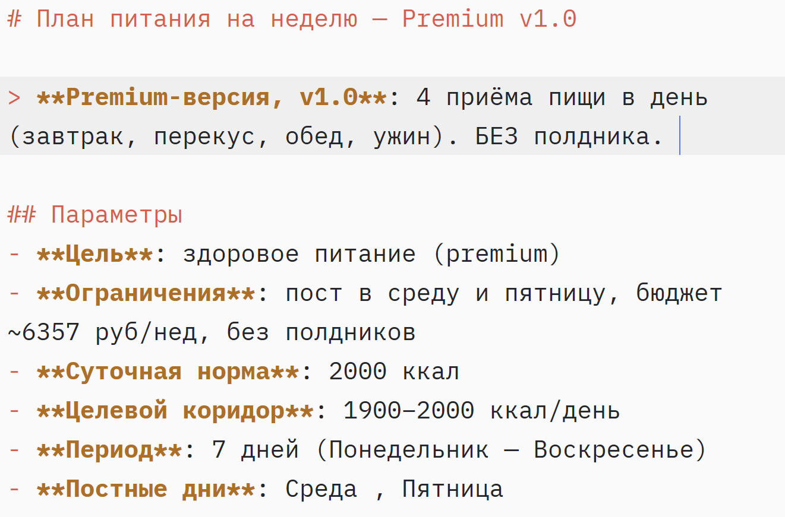
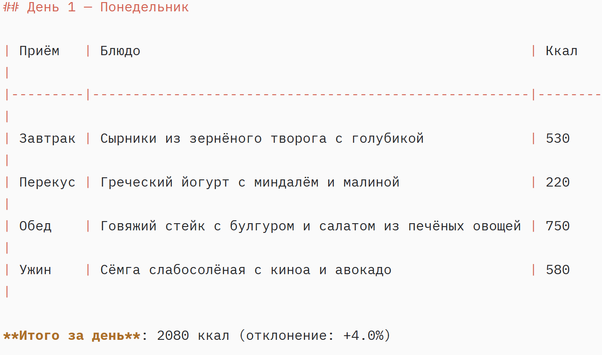

Экономия 2–5 часов в неделю
Агент забирает сбор данных, отчёты и рутинные тексты. На примере кейса cooking-researcher: подбор рецепта и план на неделю — за 10 минут вместо двух часов.
Автоматизирую задачи с помощью Claude Code: сбор данных, отчёты, работа с текстами. Сначала прототип, потом доработка по вашей обратной связи.
Подключаю ИИ-агента к вашей рутине. Вы получаете готовый результат, а не «инструмент, с которым нужно разбираться».
Агент забирает сбор данных, отчёты и рутинные тексты. На примере кейса cooking-researcher: подбор рецепта и план на неделю — за 10 минут вместо двух часов.
Генерация, редактирование, рерайт, суммаризация. Не «шаблон под копирку», а текст под ваш тон: деловой, разговорный, экспертный. Без штампов «в современном мире» и «революционных решений».
Работаю на Claude Opus 4 и Sonnet 4 через Claude Code. Подбираю модель под задачу: Sonnet — для рутины, Opus — для сложных рассуждений. Вы платите за результат, а не за «топовый тариф по привычке».
Видите, что делает агент на каждом шаге. Согласовываем промежуточные результаты, дорабатываем по вашей обратной связи. Никаких «магических коробок» — только понятная логика и итерации.
Примеры того, как ИИ-агенты решают конкретные задачи с учётом ваших ограничений и нормативов.
Задача: составить меню на неделю с учётом постных дней (среда, пятница), строгих диетологических норм (ВОЗ/Роспотребнадзор) и ограниченного бюджета.




Мультиагентная система для анализа структуры сайта, поиска битых ссылок и формирования отчёта для поисковых систем (E-E-A-T).
AI-специалист по автоматизации на базе Claude Code
Экономист и бухгалтер с опытом работы в финансах. Два года занимаюсь автоматизацией и созданием ИИ-агентов для бизнеса. Прошла углублённый курс по Claude Code и мультиагентным системам. Понимаю, как устроены бизнес-процессы изнутри: от учёта до отчётности. Подхожу к задачам практично — сначала проверить на реальных данных, потом масштабировать.
Claude Code · Claude Opus 4 / Sonnet 4 · Anthropic API · Python · Markdown · Git
Напишите в Telegram — отвечу в течение дня. Сначала 15-минутный созвон, чтобы понять задачу. Бесплатно, без обязательств.
Или MAX — ссылка пришлю в Telegram. Не люблю формы на сайтах: они теряются в спаме. Прямой контакт — быстрее.